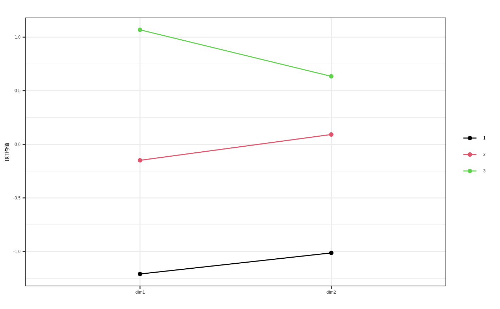

kmean_eclust.Rd知识点聚类
kmean_eclust(
x,
k = NULL,
gap_maxSE = list(method = "firstSEmax", SE.factor = 1),
nboot = 100,
verbose = interactive()
)需为标准化后的数据
聚类个数
默认为100
# 首先分析irt
# load score data
data(score_mat)
# load tag data
data(TAG)
dim_vector <- TAG %>% filter(tag_type == "认知") %>% to_dim_vector(score_data = score_mat[,-1],.,'qid','dim',levels = unique(.[,'dim']))
# load max_score data
data(max_score)
# make input
input <- list()
input$score_mat <- score_mat[,-1]
input$irt_type <- 1
input$locate_parameter <- TRUE
input$calling_count <- 0
# input$item_info$max_score <- max_score
input$item_info$dim_vector <- dim_vector
out <- yq_irt(input)
#> Warning: 未指定题目满分值，将使用作答矩阵中出现的最高分值。
#> Warning: 有3道题得分点过多，已强制划分为20个以内的分数段,最低分数区间1分。
#> R process: CTT done.
#> Start unidimensional irt estimation now :
#> R process: irt done.
#> Start multidimensional irt estimation now :
#> 维度 1 估计中
#> 维度 2 估计中
#> R process: multi irt done.
## 聚类分析
class_out <- kmean_eclust(x=data.frame(dim1=out$media_theta[[1]],dim2=out$media_theta[[2]]))
# 各类均值
class_out[["centers"]]
#> dim1 dim2
#> 1 -1.2095401 -1.01297346
#> 2 -0.1489891 0.09185337
#> 3 1.0685463 0.63476869
# 学生所在类
class_out[["cluster"]]
#> [1] 3 3 2 1 3 1 3 2 2 3 3 2 3 2 2 2 3 2 1 2 1 2 2 1 2 1 3 3 2 2 1 1 1 2 3 3 1
#> [38] 2 2 3 1 2 3 1 2 3 2 2 2 2 2 1 3 1 2 3 2 2 3 1 2 2 2 3 2 3 1 2 1 1 3 2 1 1
#> [75] 2 2 2 1 1 1 2 1 1 2 1 1 2 1 2 1 1 2 3 2 1 2 2 2 2 2 1 3 2 3 3 2 2 2 1 1 2
#> [112] 1 2 2 2 1 1 2 2 1 2 1 2 1 1 1 1 3 1 1 2 3 2 1 1 1 2 3 3 2 1 2 3 3 3 3 2 1
#> [149] 3 3 3 2 3 2 1 1 3 3 3 3 1 3 1 2 2 3 3 1 3 3 1 2 3 3 2 2 3 3 3 2 3 3 1 1 1
#> [186] 3 3 3 3 2 2 2 1 3 3 3 3 2 2 1 2 2 2 3 3 3 2 2 2 1 2 3 2 1 1 1 2 3 3 1 1 3
#> [223] 3 2 2 1 2 3 2 2 1 2 2 3 3 3 2 3 3 3 2 1 2 3 3 3 3 2 3 1 1 3 3 3 2 1 1 1 2
#> [260] 2 3 3 3 3 3 3 3 2 1 1 3 3 1 2 1 1 1 3 3 3 3 2 3 2 2 2 1 3 3 3 3 2 2 2 2 2
#> [297] 3 1 3 2 1 1 1 3 3 3 3 2 1 3 2 3 1 2 1 1 2 3 3 1 1 1 1 3 3 3 3 3 2 1 1 3 3
#> [334] 2 3 3 2 2 2 1 3 3 2 2 1
# 画图
pdat <- data.frame(as.data.frame(class_out[["centers"]]),class=seq(1:3))
pdat <- pdat %>% pivot_longer(1:2,'维度')
# 交互式图
pdat %>% group_by(class) %>%
e_charts(维度) %>%
e_line(value) %>%
e_title('各维度均值')
# 静态图
pdat$class <- as.factor(pdat$class)
fontset()
line_dot_1(data=pdat,x = "维度",y="value",group ="class",fill_color = c(1,2,3),title = "", xtitle = "",ytitle = "IRT均值")+theme_bw()
